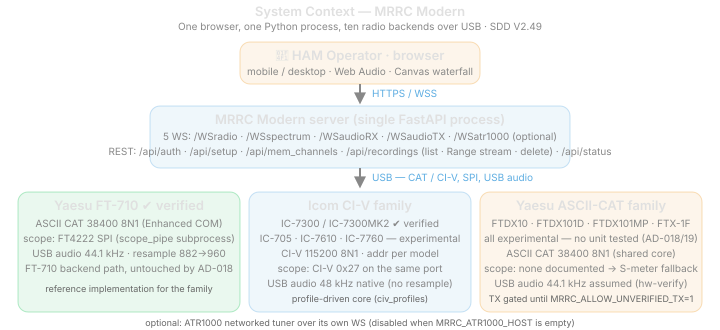

4. System Context (APP 011)
4.1 Context Diagram

4.2 Actors
| Actor | Role |
|---|---|
| HAM Operator | Uses browser UI to listen, tune, adjust settings, key PTT, monitor meters |
| System Maintainer | Starts/stops service, manages serial ports/backend selection, checks logs |
| Yaesu FT-710 | External radio device controlled via serial CAT; provides scope data via FT4222 SPI; provides audio via USB sound card |
| Icom CI-V family (IC-7300/MK2 verified; IC-705/7610/7760 experimental) | External radio device controlled via USB CI-V serial; provides in-band 0x27 spectrum on the same port; provides 48kHz native USB audio |
| Browser Runtime | Provides WebSocket, Web Audio, microphone, touch input, Canvas API |
4.3 External Interfaces
| Interface | Protocol | Endpoint | Direction | Description |
|---|---|---|---|---|
| Static UI | HTTP | /{path} |
Browser → Server | Serves index.html, CSS, JS, manifest, WASM |
| Control WS | WS | /WSradio |
Browser ↔︎ Server | JSON commands and state updates |
| RX Audio WS | WS | /WSaudioRX |
Server → Browser | Tagged dual-codec frames (Opus/PCM, 48kHz mono) |
| TX Audio WS | WS | /WSaudioTX |
Browser → Server | Tagged mic frames (Opus/PCM) for radio TX |
| Spectrum WS | WS | /WSspectrum |
Server → Browser | Binary spectrum frames (v1=851B, v2=1701B) |
| Memory API | HTTP | /api/mem_channels |
Browser ↔︎ Server | Get/set memory channels |
| Status API | HTTP | /api/status |
Browser → Server | Full radio state JSON |
| Auth API | HTTP | /api/auth/login, /api/auth/logout, /api/auth/check |
Browser ↔︎ Server | Session management |
| CAT Serial | Serial | USB Enhanced COM Port | Server → Radio | Yaesu FT-710 CAT commands (38400, 8N1) |
| CI-V Serial | Serial | USB CI-V port | Server ↔︎ Radio | Icom CI-V frames (115200, 8N1, default addr 0x94) |
| FT4222 SPI | SPI | Internal FTDI chip | Radio → Server | FT-710 850-point FFT scope data via scope_pipe.py subprocess |
| CI-V 0x27 Spectrum | Serial | Same CI-V port | Radio → Server | CI-V 0x27 spectrum frames on the CI-V bus (all Icom backends) |
| Yaesu ASCII-CAT | Serial | USB serial bridge | Server ↔︎ Radio | FTDX10/FTDX101D/FTDX101MP/FTX-1F: the same Yaesu ASCII CAT framing at 38400 8N1 as the FT-710; no scope interface exists (undocumented waveform) |
| USB Audio IN | Audio | USB Audio Device | Radio → Server | RX audio capture via PyAudio |
| USB Audio OUT | Audio | USB Audio Device | Server → Radio | TX audio playback via PyAudio |
4.4 Data Flows
| Flow | Description |
|---|---|
| CAT control flow | UI action → /WSradio JSON → backend controller (FT-710 CatController / IC-7300 CivController) → radio response → RadioState update → broadcast |
| RX audio flow | Radio USB Audio → PyAudio capture (44.1kHz Int16 for FT-710; 48kHz Int16 for IC-7300) → resample to 48kHz if needed → Opus encode → /WSaudioRX tagged frames → browser AudioWorklet playback |
| TX audio flow | Browser mic → getUserMedia (48kHz) → AudioWorklet → Opus encode (Worker) → /WSaudioTX tagged frames → Opus decode → resample 48→44.1k if needed → PyAudio → Radio USB Audio |
| Spectrum flow (FT-710) | FT-710 → FT4222 SPI → scope_pipe.py subprocess → stdout pipe → _read_scope_pipe() → parse → /WSspectrum binary → browser waterfall |
| Spectrum flow (IC-7300) | IC-7300 → CI-V 0x27 frames → civ_controller.py demux → civ_scope.py → 475-bin upsample to 850 → /WSspectrum binary → browser waterfall |
| Spectrum flow (fallback) | S-meter poll → radio_state.s_meter → ScopeHandler.update_from_radio_state() → synthetic Gaussian spectrum → /WSspectrum |
| State broadcast flow | Poll scheduler or user command → RadioState.update() → dirty-field tracking → _broadcast_state() → /WSradio stateUpdate |
| PTT safety flow | UI touch → sendCommand('ptt', true) → backend-specific PTT key command (FT-710 TX1;, IC-7300 CI-V 0x1C 0x00 key) → radio TX; release → backend-specific PTT unkey command (FT-710 TX0;, IC-7300 CI-V 0x1C 0x00 unkey) (fire-and-forget) → watchdog |
| Polling flow | PollScheduler 7-task timer → backend-specific queries → response parse → RadioState.update() → broadcast if changed |
4.5 System Boundaries
| Boundary | Inside | Outside |
|---|---|---|
| Browser boundary | UI state, audio playback, mic capture, PTT safety UX | Browser permission model and autoplay policy |
| Server boundary | WebSockets, static serving, backend serial protocol, FT4222 scope subprocess (FT-710), PyAudio I/O, Opus codec, auth | Radio firmware, USB driver stack, OS audio subsystem |
| scope_pipe boundary | FT-710 FT4222 SPI read loop, frame sync, diagnostics | FTDI D2XX driver, kernel VCP driver detach |
| CI-V boundary | IC-7300 CI-V frame I/O, 0x27 spectrum demux, echo dropping, transceive broadcast | USB CI-V driver, controller address match |
| Audio boundary | PyAudio stream management, Opus encode/decode, WS fan-out, per-backend sample-rate bridge | USB audio device enumeration, sample rate negotiation |
4.6 Contextual Constraints
- FT-710 CAT requires the Enhanced COM Port (not Standard COM Port) at 38400 baud.
- IC-7300 CI-V uses a single USB serial port at 115200 8N1; the controller address is configurable via
IC7300_CIV_ADDR(default0x94). - FT-710 FT4222 SPI requires D2XX driver with
DetachKernelDriver=1to claim the device from macOS VCP. - Only one process can access the FT4222 at a time — wfview or ExpertSDR must be closed.
- USB audio device naming varies by OS and radio; PyAudio auto-detects per-backend hints (e.g., “FT-710”/“YAESU” for FT-710; “USB Audio CODEC”/“USB Audio Device” generic names).
- iOS Safari requires HTTPS for reliable
getUserMedia; HTTP is acceptable for LAN/localhost use. - Serial port path varies by OS:
/dev/cu.usbserial-*or/dev/cu.SLAB_USBtoUART(macOS),/dev/ttyUSB*(Linux),COM*(Windows).